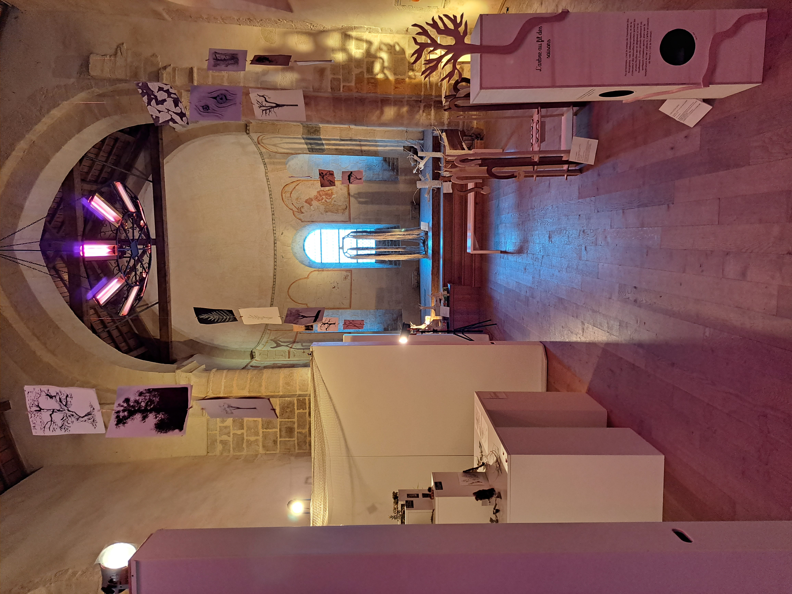
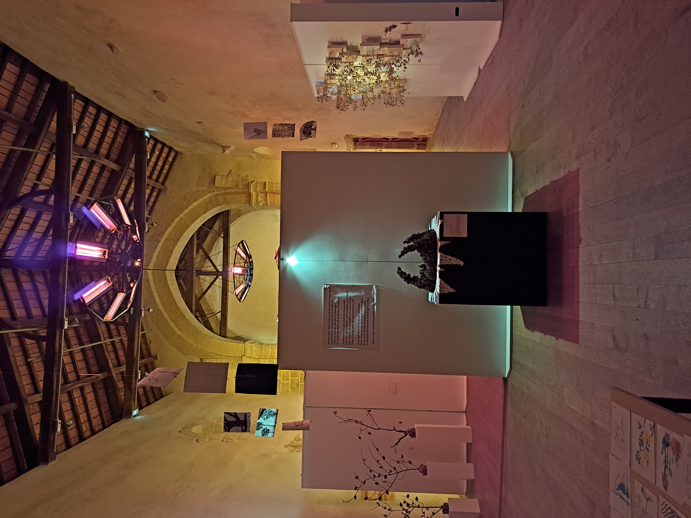
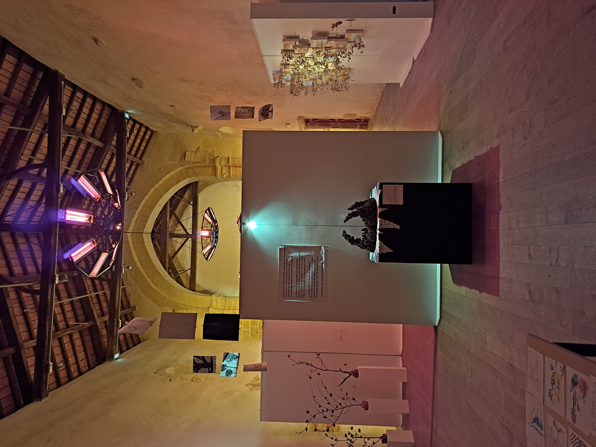
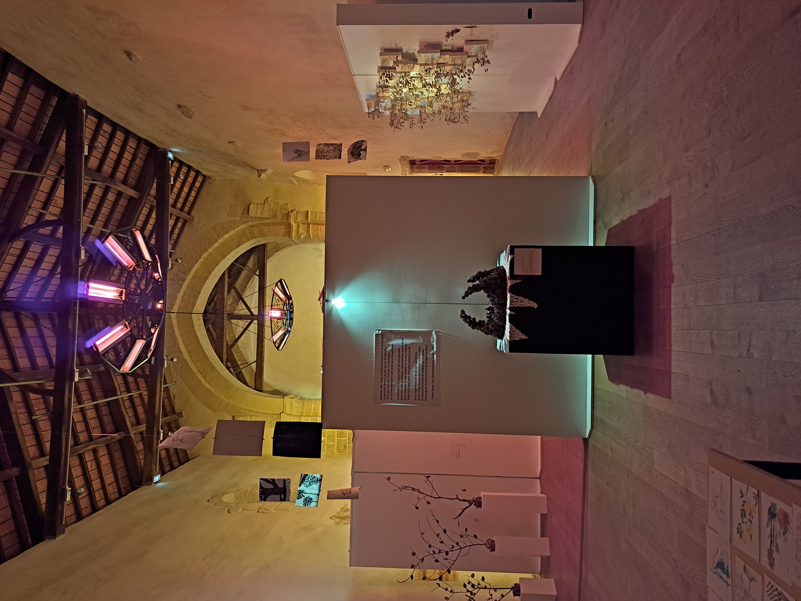

 
 Exposition scénographique — nature, destruction, renaissance
« Racines » est une exposition qui aborde la thématique de la destruction que l’humain a provoqué sur la nature depuis sa naissance.
La découverte de l’exposition se fait en trois parties : la destruction, la transition et l’origine.
Gestion de la scénographie, communication et vernissage de l’événement.
